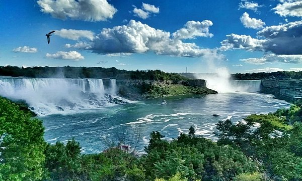

My Travel World
Countries and cities I have visited, with small notes and memories attached to each place.
Select a city from each dropdown to see its photo area and memory note.
Canada
Quiet streets, cold winters, and friendly people – a mix of French and English culture.
Québec City
Old town streets, stone houses, and a European feeling in North America.
Toronto

CN Tower, multicultural neighborhoods, and long walks through downtown.
Ottawa
Government buildings, calm riverside views, and a quiet capital atmosphere.
Montreal
French cafés, street art, and a mix of old and modern city life.
Kitchener
Smaller city, slower pace – good for walks and simple daily life.
Senegal
Atlantic coast, warm weather, and strong West African culture.
Dakar
Ocean breeze, busy streets, and colorful markets by the sea.
Mali
Deep history, desert routes, and unforgettable cultural stories.
Timbuktu
A legendary name – desert, history, and the feeling of being far from everywhere.
Bamako
Capital city energy mixed with local music, markets, and daily life.
Morocco
Narrow streets, colorful tiles, and the smell of tea and spices.
Casablanca
A big port city, ocean views, and modern life mixed with tradition.
Tangier
Meeting point of sea and continents – ferries, hills, and white buildings.
Tunisia
Mediterranean light, ruins, and North African atmosphere.
Tunis
Old city streets, markets, and a mix of Arabic and French influence.
Carthage
Ruins by the sea, history layered on top of history.
France
Cafés, rivers, and historic streets filled with art and stories.
Paris
Bridges over the Seine, museums, and long evening walks.
Strasbourg
Half-timbered houses, river views, and a border-city feeling.
Italy
History in every street, good food, and warm city squares.
Rome
Walking among ruins and fountains like an open-air museum.
Florence
Bridges, art, and the feeling of Renaissance everywhere.
Venice

Boats instead of cars, narrow canals, and quiet corners.
Milan
Modern city, fashion, and big central stations full of travelers.
Pisa
The leaning tower and a classic postcard view.
Switzerland
Mountains, lakes, and very clean, organized cities.
Zurich
Lake views, trams, and quiet, well-ordered streets.
Germany
Trains, rivers, and many different cities with their own character.
Hanover
Calm city, green parks, and classic German streets.
Hamburg
Harbor, bridges, and ships everywhere.
Berlin
History, street art, and many different neighborhoods.
Munich
Bavarian style, big squares, and beer gardens.
Frankfurt
Skyscrapers and a financial center feeling.
Osnabrück
Smaller streets and a more local atmosphere.
Ulm
Famous cathedral and calm river views.
Stuttgart
Hills, industry, and car museums.
Cologne
Cathedral by the river and a relaxed city feeling.
Düsseldorf
Modern river promenade and lively streets.
Essen
Former industrial area turned into new city spaces.
Netherlands
Flat land, bikes everywhere, and canals running through cities.
Amsterdam
Canals, narrow houses, and a lot of bicycles.
Rotterdam
Modern buildings, big port, and wide bridges.
Seaside Town
Wind, sand, and the North Sea waves.
Belgium
Medieval city centers, canals, and strong coffee or hot chocolate.
Bruges
Canals, old houses, and very cozy streets.
Ghent
Student city feeling with history and nightlife.
Brussels
European capital vibes and a mix of languages.
Turkey
Home country memories: food, family, and many different regions in one map.
Istanbul
Boğaz, vapurlar, simit ve çocukluk / gençlik hatıraları.
Şanlıurfa
History, spicy food, and warm southern evenings.
Gaziantep
Baklava, kebap, and strong flavors everywhere.
Saudi Arabia
Spiritual journeys and powerful, quiet nights in the holy cities.
Mecca
Center of pilgrimage – full of emotion and prayer.
Medina
Peaceful, calm, and full of respect and memories.
Georgia
Mountains, Black Sea coast, and friendly neighbors of Turkey.
Batumi
Black Sea coast with lights, music, and palm trees.
Tbilisi
Hills, bridges, and hot spring baths.
Kosovo
A young country with strong Balkan character and Turkish connections.
Pristina
Capital city with new buildings and Balkan streets.
Albania
Mountain roads, coastal views, and deep history.
Berat
“City of a thousand windows” with white houses on the hill.
Tirana
Colorful buildings and a mix of old and new.
North Macedonia
Lakes, mountains, and strong Ottoman-era traces.
Skopje
Bridges, statues, and a bazaar that feels very familiar.
Ohrid
Clear lake water and peaceful views from the hills.
Montenegro
Small country with strong coastline and mountain routes.
Budva
Beach, old town walls, and summer nights.
Kotor
Bay surrounded by mountains, very dramatic views.
Bosnia and Herzegovina
Rivers, bridges, and emotional history in every street.
Sarajevo
Mountains around the city and a strong mixture of cultures.
Mostar
Famous bridge over turquoise water – like a postcard.